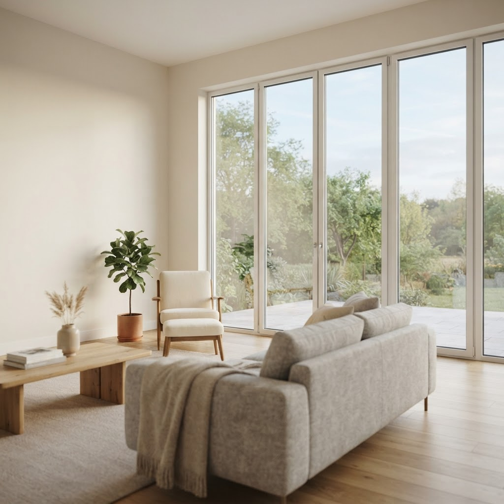

Черёмухин и партнёры — Зеленоградский
Окна под ключ в Москве с 2014 года
Ставим и обслуживаем пластиковые окна и балконные блоки по всем округам. Работаем без посредников, предоставляем бесплатный выезд замерщика в день обращения или на следующий день.
Частые вопросы
Ставите ли окна зимой?
Работаем круглый год по теплой технологии: шов не промерзает, а квартира остается без тепла не более часа на каждое окно.
Можно менять окна по частям?
Да, остекление можно разбить на этапы. На каждое помещение делаем отдельный замер и свой договор.
Контакты и время приёма
Принимаем заявки по телефону и в мессенджерах ежедневно с 9 до 21 по Москве. Замер согласуем на ближайшее удобное время, в том числе в выходные. Офис и цех в Москве, выезд по городу и ближнему Подмосковью.
О нас
Мы — небольшая московская компания с двумя цехами остекления и четырьмя монтажными бригадами. Ежегодно устанавливаем около 900 окон для жильцов и управляющих компаний, обеспечивая полный сервис по ремонту и регулировке.
Бесплатный замер
Оставьте заявку, чтобы мы приехали в удобное время, произвели точный расчет и зафиксировали цену в договоре.
Окна в Москве с 2014 года3 статьи
Все статьи

Мастер по ремонту пластиковых окон в Зеленограде: как всё проходитВ Зеленоградском районе жители часто сталкиваются с продуванием рам, поэтому спрос на обслуживание конструкций растет. Мы разберем, когда действительно нужен… Как заказать ремонт окон пушкин спб в ЗеленоградеКак заказать ремонт окон пушкин спб в Зеленограде и сразу понять, во что обойдётся работа? В Зеленоградском районе Москвы мы действуем по принципу «делаем ка…
Как заказать ремонт окон пушкин спб в ЗеленоградеКак заказать ремонт окон пушкин спб в Зеленограде и сразу понять, во что обойдётся работа? В Зеленоградском районе Москвы мы действуем по принципу «делаем ка… Ремонт окон приморский район спб в Зеленограде: как всё проходитСколько занимает ремонт окон приморский район спб в Зеленограде и как всё проходит? Работаем по Москве, выезжаем в Зеленоградский район, делаем качественно и…
Ремонт окон приморский район спб в Зеленограде: как всё проходитСколько занимает ремонт окон приморский район спб в Зеленограде и как всё проходит? Работаем по Москве, выезжаем в Зеленоградский район, делаем качественно и…